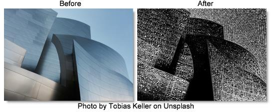

S_Etching
Description
Generates a version of the image using two sets of black and white lines of varying thickness to give an etching or lithograph look.
The S_Etching filter comes from the Emmy award winning Boris FX Sapphire filter set.
Category
Stylize.
Controls
Presets
To select a preset, pick one from the Presets window.
Lines Frequency
The frequency of the etched lines. Increase for a finer line pattern or decrease for fewer lines.
Lines1 Frequency
Scales the frequency of the first set of etched lines. Increase for a finer line pattern or decrease for fewer lines.
Lines2 Frequency
Scales the frequency of the second set of etched lines.
Lines Angle
Rotation of the etched lines pattern in counterclockwise degrees.
Lines1 Angle
The relative angle of the first set of etched lines in counterclockwise degrees.
Lines2 Angle
The relative angle of the second set of etched lines in counterclockwise degrees.
Lines Shift X & Y
Shifts the pattern of lines. This location will also be the center of rotation when the line angle parameters are adjusted.
Lines Sharpness
The sharpness of the etched lines. Decrease for softer edges.
Lines Add Width
Increase for thicker lines.
Smooth Source
If positive, the source is blurred by this amount before the etching is applied.
Color1
The brighter color of the lines pattern.
Color0
The darker color of the lines pattern.
Wave Frequency
The frequency of the waviness of the etched lines. Increase for more waves.
Warp Amp
The amount the output is warped using the source brightness.
Warp Smooth
The smoothness of the warping. This has no effect if Warp Amp is 0.
Edges Scale
Adjusts the amount of source edges to be included in the result. If positive, edges in the source image are found and added to the etching pattern.
Edges Threshold
Determines which edges are included in the result. Increase to remove minor edges and speckles. This has no effect unless Edges Scale is positive.
Edges Width
The width of the edges added to the result. Increase for wider edges. This has no effect unless Edges Scale is positive.
Edges Sharpness
Increase for sharper edges or decrease for softer edges. This has no effect unless Edges Scale is positive.
Show Lines Shift
Enables/disables the on-screen control for adjusting the Lines Shift parameter.